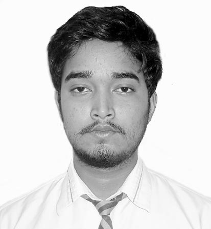

HydroSense Research Team
Our lab is made up of a highly engaged and collaborative team of researchers. We recognize that diverse teams are crucial for driving scientific excellence and innovation. We strive to develop a positive and welcoming environment of professional courtesy, kindness, and collaboration.
Faculty

Dr. Manabendra Saharia is an Assistant Professor in the Department of Civil Engineering at the Indian Institute of Technology Delhi. Previously, he worked in the Hydrology Lab of NASA Goddard Space Flight Center and the National Center for Atmospheric Research. He obtained his PhD in Water Resources Engineering from the University of Oklahoma during which he worked in the Advanced Radar Research Center. His primarily expertise is in developing techniques and systems for monitoring and mitigating natural hazards such as floods and landslides, with a special focus on the worst-affected regions of the world.
Email: msaharia@iitd.ac.in
Phone: +91-011-26591260
Graduate Students and Project Staff

Arunik Baruah has an Integrated M.Tech degree in Geoinformatics from Central University of Jharkhand. His research interests include remote sensing, time series analysis and microclimate.

LATER

Anagha P has completed B.Tech in Computer Science and Engineering from Govt. Engineering College Wayanad and M.Tech in Geoinformatics from Indian Institute of Space Science and Technology, Trivandrum. She has got one-year experience as a Senior Data Analyst in Subex, Bengaluru. Her research interests include Deep Learning, Flood Forecasting, Optical and Microwave Image Processing.

Bhanu Magotra has B.E degree in Civil Engineering from GCET Jammu and M.Tech in Remote Sensing & GIS from NITK Surathkal. He has five years of experience working as an Assistant Professor in LPU Jalandhar and GCET Greater Noida. His research interests include flood forecasting, machine learning and geoinformatics.
Floods and machine learning

Nirdesh Sharma has a Bachelor’s degree in Civil Engineering from NIT Hamirpur and was a DAAD-KOSPIE scholar at TU-Darmstadt during his M.Tech. in IIT Guwahati. His research interests include hydrological modelling, active and passive microwave remote sensing.

LATER

Sai Kiran Kuntla is a Research Scholar in the Dept. of Civil Engineering at IIT Delhi. He holds a Bachelor’s degree in Civil Engineering and a Master’s degree in GeoInformatics and Surveying Technology from JNTU Hyderabad. Broadly his research interests include analyzing the physical process of floods, real-time flood monitoring, and interactions between floods and society.

Data visualization, Modeling
Data visualization, Modeling
Undergraduate Students
LATER
LATER
LATER
LATER
LATER

Data analysis, machine learning, web scraping